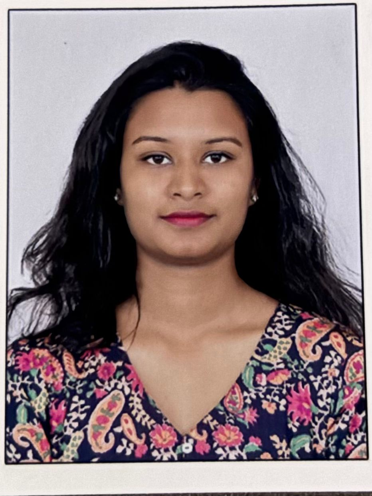

KRITHIKAA ARNOLD

4/660A, Indira Nagar,
4th Cross, Opposite to Stadium,
Dindigul-624004
7448444841
http://linkedin.com/in/krithikaaarun
Objective
Aspiring software engineer seeking an opportunity to transition into a software development
role. Eager to contribute to innovative projects by leveraging problem-solving skills and a
passion for coding, while continuously learning and growing to drive organizational success.
Education
| Course/Degree |
School/University |
Score/CGPA |
Year |
| B.Tech-Electronics & Instrumentation. |
Sastra Deemed University. |
7.57 |
2025 |
| Class 10 |
Prasidddhi Vidyodaya. |
90.2% |
2019 |
| Class 12 |
Achyuta Public School. |
89.2% |
2021 |
Experience
Skills
Technical skills
- MS Excel
- MS Powerpoint
- Python Programming
- Java Programming
- MySQL
Soft skills
- Effective Communication
- Creative Problem-solving
- Team Collaboration
- Time Management
Projects
- Smart Kit for Coconut Farm Management System.
- Water Level Monitoring System using IOT.
- Security System using PIR sensor.
Extracurricular Activities
- Head, KS Merchandise - Sastra University
- Led a team to organize and manage T-shirts sales during cultural fests.
- Marketed and convinced students, increasing sales and engagement.
- Contributed proceeds to the college to support fest activities.
- Member, DARTS – Sastra University
- Participated in and contributed to art exhibitions, stage decorations, and event
planning.
- Assisted in designing creative elements for cultural fests and college events.
- Collaborated with fellow artists to enhance campus aesthetics and student
© Krithikaa. All rights reserved.